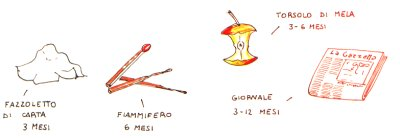
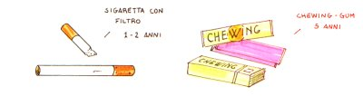
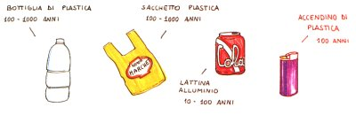
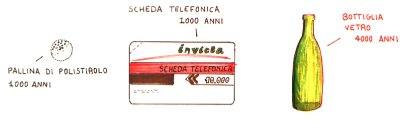
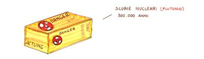
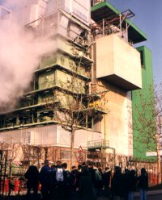
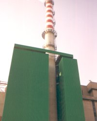

Docente referente prof.ssa Rita Brunetti Rodati
Il progetto relativo ai rifiuti solidi urbani (R.S.U.) viene ripetuto già da anni nelle classi del biennio, rivolgendo un'attenzione particolare agli imballaggi, in considerazione del fatto che ne rappresentano il 20% in peso.
- limitare la massa dei rifiuti;
- incentivare la raccolta differenziata;
- limitare l'impatto dei rifiuti sull'ambiente;
- ridurre il consumo energetico;
- educare gli studenti a comportamenti tendenti ad evitare la dispersione
dei rifiuti sia negli ambienti esterni che confinati (aule, luoghi pubblici);
- illustrare i contenuti significativi del decreto legislativo n. 22 del 5/2/97
riguardante i rifiuti e il loro trattamento.
Il percorso didattico viene affrontato durante lezioni frontali e interattive che considerano le principali problematiche inerenti i R.S.U.
Tali lezioni prendono in esame la difficoltà di gestire quantità sempre crescenti di rifiuti e l'impatto che essi determinano sull'ambiente.
Tra le varie categorie di rifiuti, destano particolare preoccupazione quelli che si generano nelle aree metropolitane, in prevalenza di origine domestica, definiti rifiuti solidi urbani.
Le cause che rendono oggi complesse le attività di smaltimento dei R.S.U. sono dovute innanzitutto alla varietà dei materiali.
Infatti nei cassonetti si trova:
I rifiuti possono essere di due tipi:
biodegradabili e non biodegradabili.
I primi vengono aggrediti da organismi decompositori che trasformano le molecole organiche complesse in molecole semplici senza lasciare tracce sul terreno.
I secondi possono solamente essere frantumati o deformati, rimanendo a lungo inalterati nell'ambiente.
Tabella del tempo di distruzione di alcuni R.S.U. |
|  |
|  |
|  |
|  |
|  |
Poichè esistono dei limiti di tipo quantitativo di capacità e spazio per le discariche, e di accettazione per gli impianti di incenerimento, occorre orientarsi verso una riduzione dei R.S.U. iniziando alla fonte: ridurre la quantità degli scarti attraverso il riuso, il riutilizzo ed il riciclaggio.
Relativamente all'impatto ambientale provocato vengono esaminate le principali caratteristiche dei materiali più usati negli imballaggi: alluminio, vetro, carta, plastica.
Gli aspetti positivi dell'alluminio sono:
- abbondanza di materia prima;
- elevata capacità di riutilizzo;
- elevato recupero motivato dall'alto valore dei residui;
- elevata percezione, da parte dell'utenza, della sua idoneità al riciclaggio.
Gli aspetti negativi sono:
- elevato consumo di energia per la separazione dal minerale di estrazione;
- rischio di inquinamento connesso ai processi di purificazione.
Il vetro presenta alcuni fondamentali aspetti positivi:
- abbondanza di materia prima;
- notevoli caratteristiche igieniche per il contenimento di cibi e bevande;
- riutilizzazione in seguito a restituzione e nuovo riempimento;
- sistemi di raccolta differenziata ampiamente funzionanti perché esiste un'alta percezione, da parte dell'utenza, della convenienza al recupero e al riciclaggio.
Gli aspetti negativi sono:
- alto consumo di energia in fase di produzione;
- rischi di inquinamento connessi con la produzione in fornace;
- peso elevato degli imballaggi;
- pericoli per la sicurezza dovuti a frantumazioni.
La carta è considerata dal consumatore l'imballaggio meno aggressivo nei confronti dell'ambiente. Gli aspetti positivi sono:
- è prodotta da materie prime rinnovabili;
- è degradabile;
- è riciclabile;
- è possibile ottenere energia con la termodistruzione.
Gli aspetti negativi sono:
- concorre alla distruzione dell'ambiente boschivo;
- è utilizzata, in alcuni casi, in associazione ad altri materiali che ne
impediscono la raccolta differenziata ed il riciclo.
La plastica (1) è il materiale più versatile ed efficace da imballaggio, presenta i seguenti vantaggi:
- è economica;
- è igienica per cibi e bevande;
- è fonte di elevato recupero energetico se sottoposta a termodistruzione.
Gli aspetti negativi sono:
- deriva da materie prime non rinnovabili;
- è ingombrante nella massa dei rifiuti;
- non è degradabile;
- è difficilmente recuperabile quando viene utilizzata in associazione con
altri materiali.
Si giunge in tal modo a concludere che non ci sono materiali "ideali" per l'ambiente; ma si devono adottare strategie mirate a ridurne l'uso.
Le tecniche di limitazione dell'impatto ambientale, derivato dagli imballaggi, puntano a tre obiettivi principali:
- ridurre alla fonte i rifiuti da imballaggi;
- incentivare l'attività di recupero e riutilizzo o riuso;
- incrementare l'uso di imballaggi biodegradabili.
Tali obiettivi possono essere raggiunti con:
- la diminuzione dei materiali impiegati;
- l'uso di imballaggi smaltibili con minore impatto ambientale (imballaggi
monomateriali);
- riuso o riutilizzo di imballaggi;
- riciclaggio con recupero di materiali;
- recupero di energia mediante termodistruzione.
La termodistruzione con recupero di energia viene posta sullo stesso piano del riciclo dei materiali, in quanto si raggiungono gli stessi obiettivi: riduzione della massa dei rifiuti destinati alle discariche e recupero di energia e calore, anziché di materiali.
L'uso dei rifiuti per generare energia riduce del 90% il volume del materiale destinato alla discarica e l'energia ottenuta può risultare estremamente vantaggiosa per le comunità locali.
La termodistruzione dei R.S.U. presenta i seguenti vantaggi:
- notevole flessibilità di impiego;
- limitato fabbisogno di aree per gli impianti;
- produzione di scorie e ceneri in quantità inferiore al 10% del volume che
i rifiuti occuperebbero in discarica;
- produzione di energia termica ed elettrica il cui valore economico può
coprire fino al 50 - 60% dei costi di esercizio.
- necessità di ampie superfici a causa della bassa densità dei rifiuti;
- perdita definitiva di materiali (carta, plastica, vetro, metalli) e di energia
(possibilità di trasformazione in calore, etc.) che potrebbero essere
- contenimento dei costi di progettazione e di realizzazione;
- possibilità di recuperare terreni degradati e paesaggi deturpati, come ad
Le discariche generano anche il percolato: liquame altamente inquinante che si forma in seguito al passaggio di acqua piovana attraverso i vari strati dei rifiuti con trascinamento e solubilizzazione di materiale organico e inorganico. Per evitare il pericolo di infiltrazione e inquinamento le discariche controllate hanno il fondo impermeabilizzato con strati di argilla o con mantelli plastici.
Il percolato, drenato e raccolto, deve essere trattato negli impianti di depurazione delle acque.
La conclusione delle lezioni porta quindi a considerare i rifiuti non solo come "problema" ma, se adeguatamente gestiti, anche come "risorsa".
Il percorso didattico si conclude con una lezione all'impianto di incenerimento dei R.S.U. della Città di Bologna.
| 
L'inceneritore di Quarto Inferiore (BO) |

L'inceneritore (veduta parziale) |
Bibliografia: rivolgersi al docente referente del progetto.
(1) legenda:
PE: polietilene
PET: polietilenetereftalato, poliestere saturo
PVC: cloruro di polivinile
PP: polipropilene
PS: polistirene